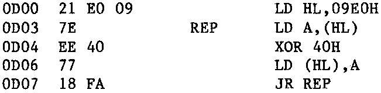
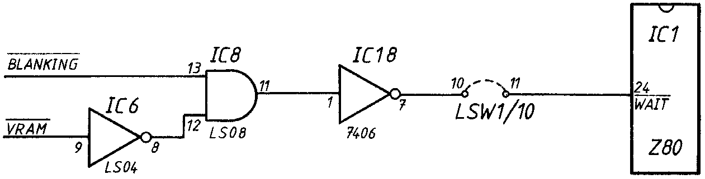

INMC 80 News |
February–April 1981 · Issue 3 |
| Page 42 of 55 |
|---|
Some time ago we had a letter from Mr. Willmott of West Drayton in Middlesex, who raised an interesting problem concerning the screen blanking on a Nascom 2. Mr. Willmott wishes to remove the undesirable black screen flashes which occur when using the graphics. (These occur because considerable efforts were made when N2 was designed to remove the white screen flashes caused when the processor accesses the video RAM during normal screen read/write operations. Unfortunately because of this, screen blanking becomes very visible when large areas of white are displayed in the graphics mode.) So here is Mr. Willmott’s letter, if anyone has an answer, they’re welcome to write to us.
Dear INMC,
The ‘snow plough’ flash supressing circuitry on the Nascom 2 is very annoying when one uses the NAS-GRA graphics option. Also rapid access to the video RAM destroys the displayed picture. I have been attempting to find a way round these problems.
Firstly I ran the following machine code program:
Then I tried reducing the value of R75 associated with IC58. A value of 5K6 appeared to be optimum. However, the blanking is still significant.
I tried attacking the heart of the problem, ie; resolving the conflict in
access to the video RAM by the VDU and CPU circuitry. In other words, I decided to
make the CPU wait when accessing the video RAM if the contents were being displayed.
Succinctly:
WAIT = BLANKING · VRAM
using the available signals:
WAIT = BLANKING · VRAM
As I had implemented the no wait modifications on the RAM board in INMC NEWS issue 7, I was able to use some of the wait circuitry. I also found a spare inverter on the board and so I implemented the modification as follows:
The theory seems ok, but the practice is not! The best I could manage was by putting pin 12 of IC8 to a high. This had the desired effect except that:
– the first two columns of the VDU flickered
– there were occassional flashes on the screen
– the Z80 execution rate at 4MHz was greatly reduced.
The VRAM signal should have overcome the last problem with little effect on the execution rate. Perhaps I need a blanking signal that starts earlier along the line – this would prevent the CPU using the video RAM when the VDU wants to start displaying a line. However, I do not understand why including the VRAM signal should freeze the board.
| Page 42 of 55 |
|---|